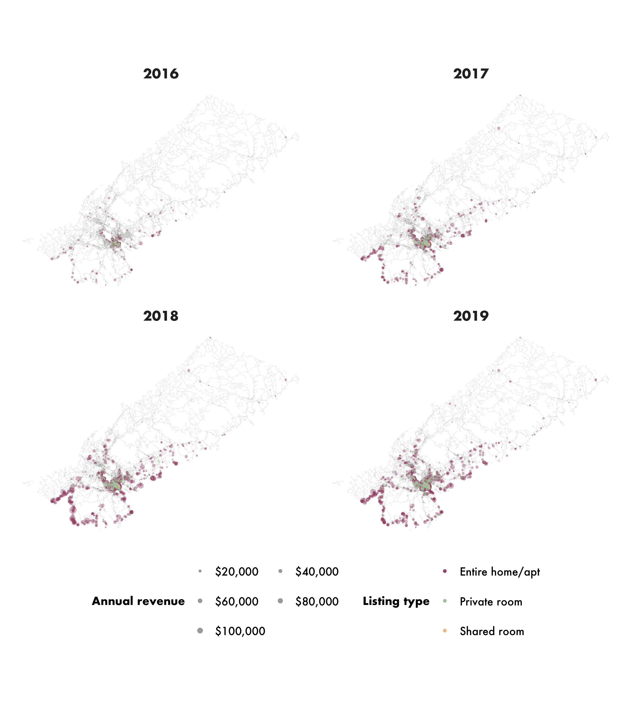
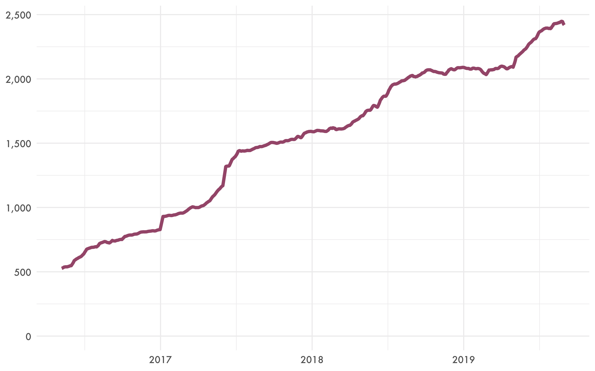
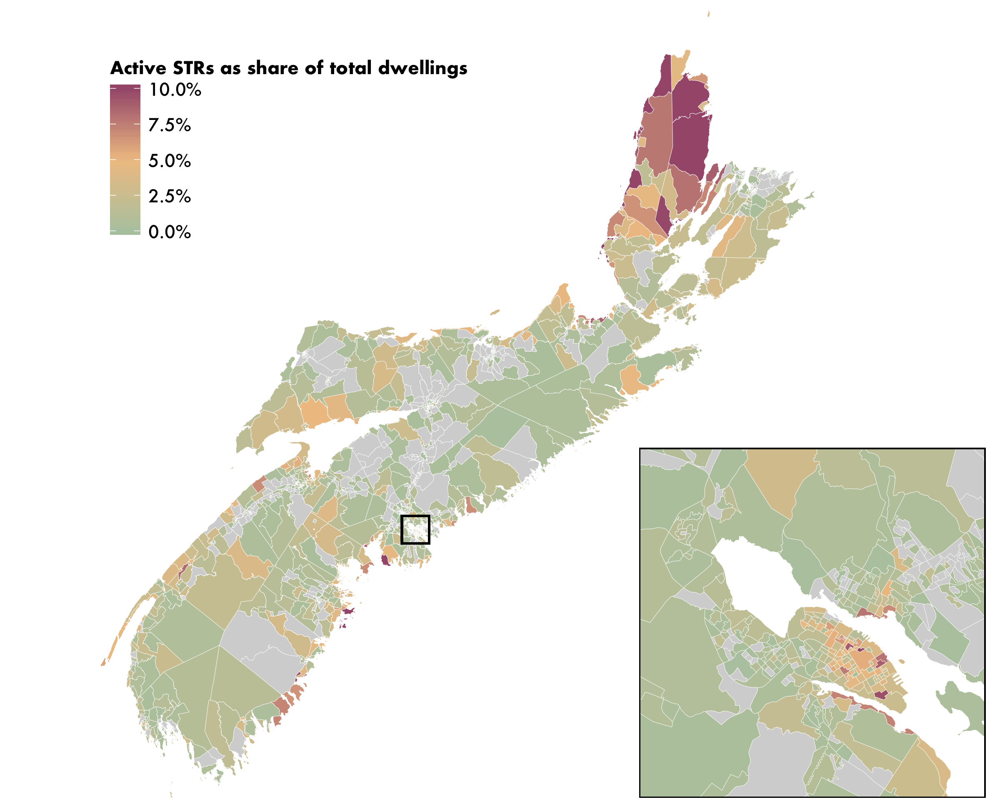
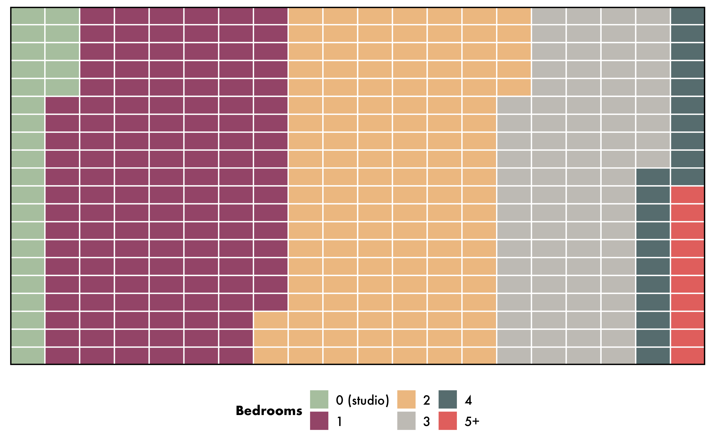
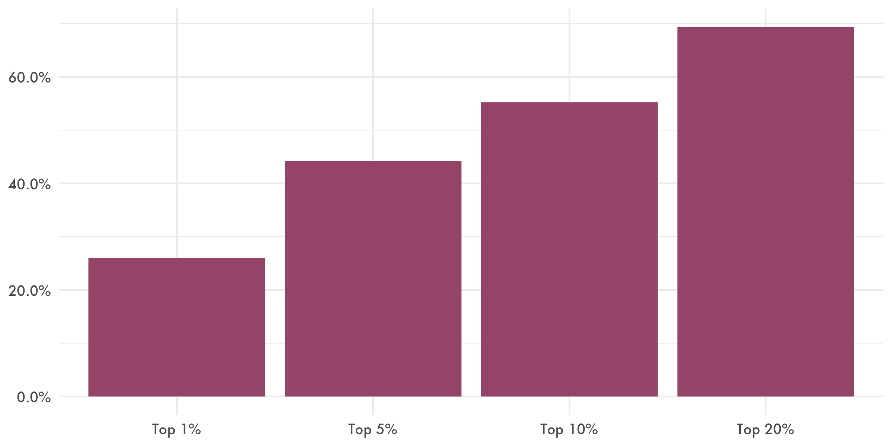
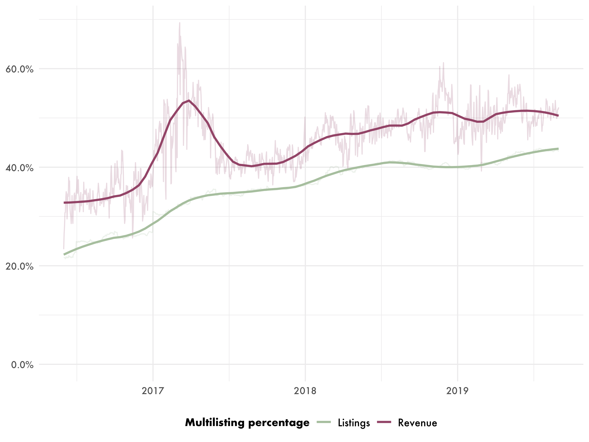
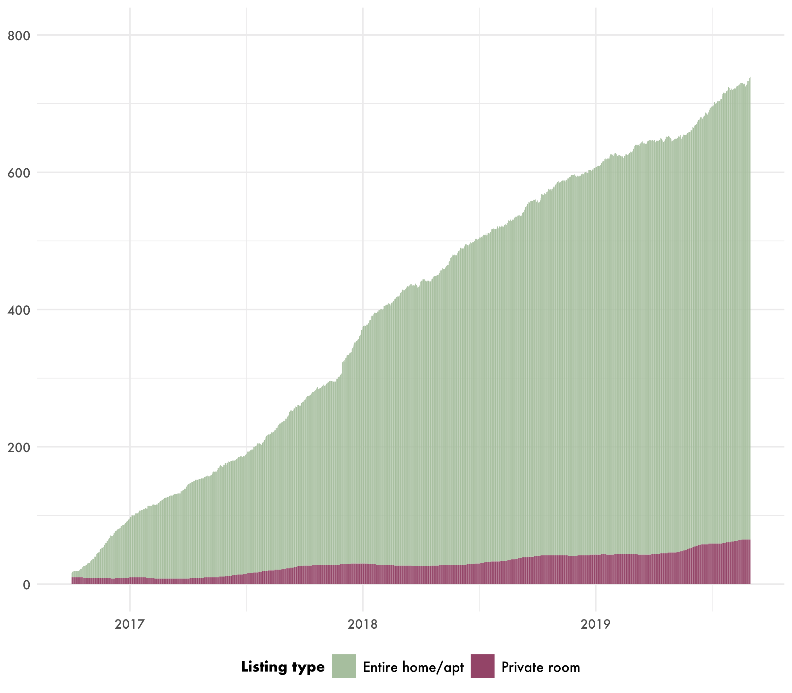
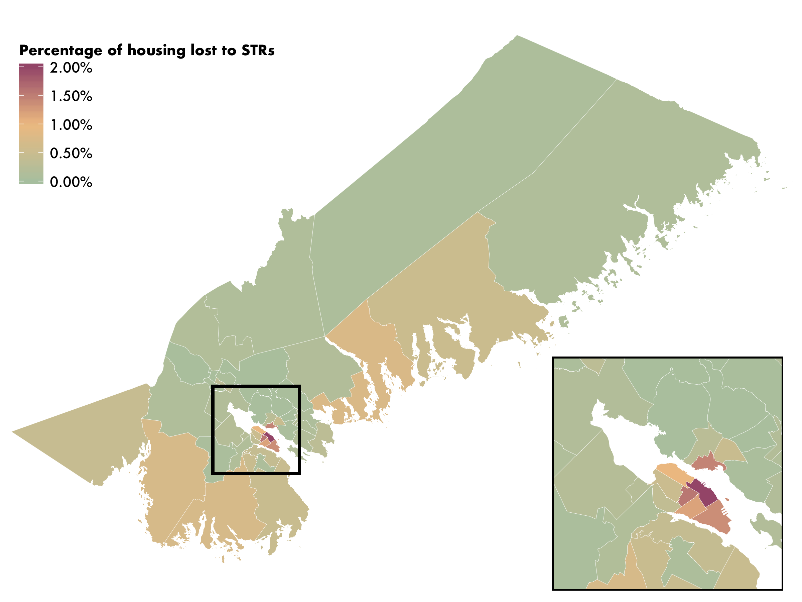
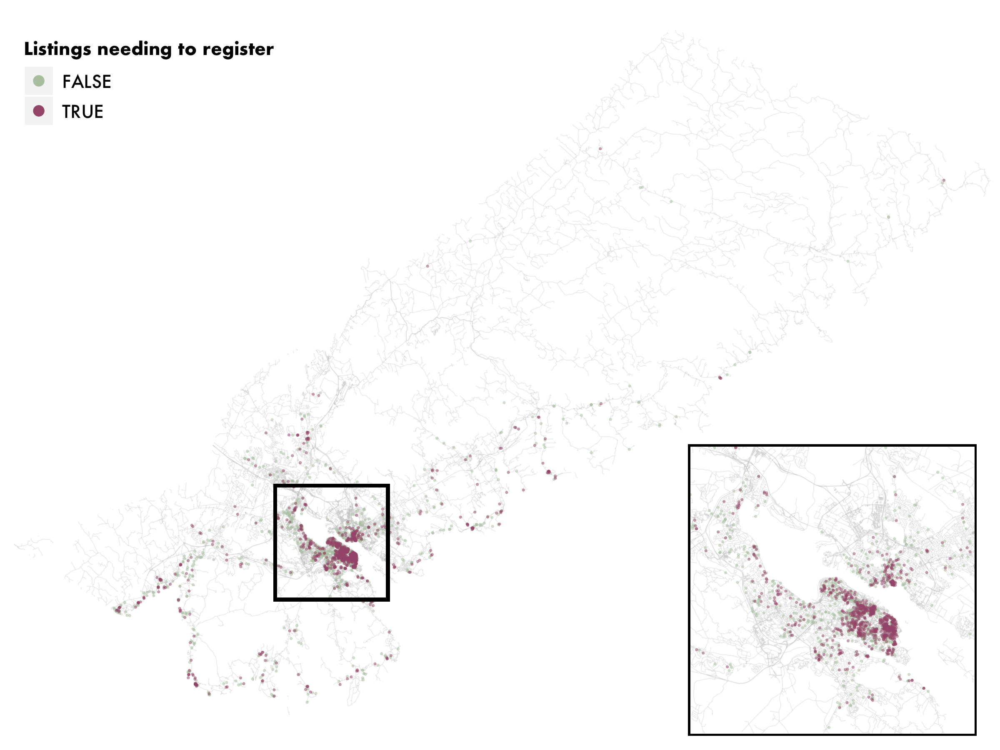
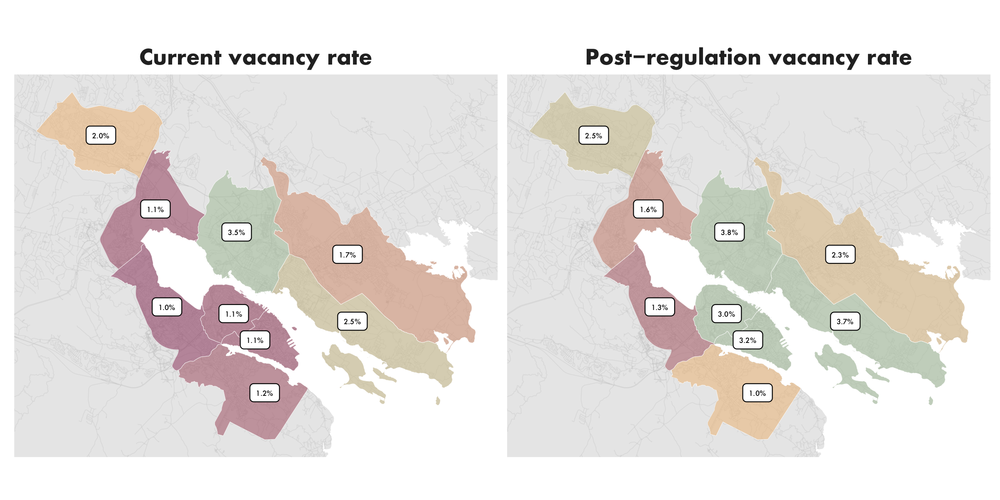

In March 2019, the government of Nova Scotia announced plans to modernize its laws governing tourist accommodations in order to regulate short-term rentals (STRs). STRs are currently unregulated in the province, but the incoming changes (due to take effect in 2020) would require commercial STR hosts to register with the Province and pay equivalent taxes to traditional hotels, while “home-sharers” renting their primary residence would remain unregulated.
To better understand the context in which this regulatory action is being taken, we have produced a detailed analysis of the current status of STRs in the Halifax Regional Municipality. It’s called Short-term rentals in Halifax: UPGo city spotlight, and it’s available for download now. As always, although much of the raw data we rely on is private, all of our analysis is publicly available for scrutiny, replication and reuse at GitHub. Below I summarize the main results and graphics from the paper.
Spatial distribution of listings
Figure 1 shows the location of active STR listings over the last four years in the Halifax Regional Municipality, with listings scaled in proportion to their annual revenue. It demonstrates that listings
are heavily concentrated in the downtown area, alongside an additional zone of high listing concentrations in coastal communities that has seen rapid growth in recent years.

Figure 1. Spatial distribution of active STR listings in the Halifax Regional Municipality
Active daily listings and annual revenue
On August 31, 2019, there were 2,420 short-term rentals active in the HRM, operated by 1,980 hosts. STR listings located in housing units in Halifax earned $30.9 million last year (September 2018 - August 2019). The number of active listings in Halifax increased 19.2% from the previous year.

Figure 2: Active daily STR listings in the HRM
The HRM is a large administrative territory that contains both highly urban and more rural districts. To gain a more differentiated perspective on the distribution of STR listings within the territory, we break it down into four areas: “Halifax”, “Dartmouth”,
“Suburban” (which refers to the suburban municipalities around the core urban area), and “Rural”. Moreover, given the high level of variation in listing density, urban form, and other important characteristics across the region, we also analyze STR activity data by neighbourhood (Figure 3).

Figure 3: Sub-areas and neighbourhoods of the Halifax Regional Municipality
The large majority of STR listings in the HRM are located in its urban areas. Halifax and Dartmouth contain 1,670 of the total 2,420 active listings (69.2%). Urban areas also generated 73.2% of host revenue for the Municipality ($22.6 out of $30.9 million total).
| Halifax Regional Municipality |
2,420 |
12.9 |
19.2% |
$31.3 million |
| Halifax |
1,410 |
22.1 |
17.7% |
$19.2 million |
| Dartmouth |
260 |
8.4 |
19.2% |
$3.4 million |
| Suburban |
360 |
12.7 |
39.8% |
$1.6 million |
| Rural |
560 |
30.0 |
17.2% |
$7.1 million |
Halifax in context: Nova Scotia and Atlantic Canada
The Halifax Regional Municipality has two fifths (43.6%) of Nova Scotia’s population, and approximately the same share of its active short-term rentals: 2,420 out of a total 6,140. Figure 4 shows the distribution of these listings relative to the number of dwelling units, and demonstrates higher relative concentrations of STRs on the southeast coast from Halifax to Lockeporte, and on Cape Breton Island.

Figure 4: Active STRs as a share of all dwelling units in Nova Scotia, by dissemination area
The HRM has the most active STR listings of any city in Atlantic Canada, with nearly three times the number of second-place St. John’s. With 12.9 listings per 1000 dwellings, Halifax has more relative listings than Charlottetown or Moncton, but considerably fewer than St. John’s or Lunenberg. The HRM also leads Atlantic Canada in terms of revenue earned last year (September 2018 to August 2019), with over $31 million.
| Halifax Regional Municipality |
2,420 |
12.9 |
$31.3 million |
$12,900 |
| St. John’s |
890 |
17.0 |
$9.6 million |
$10,900 |
| Charlottetown |
620 |
11.8 |
$7.9 million |
$12,900 |
| Moncton |
360 |
10.2 |
$3.2 million |
$8,800 |
| Lunenberg |
290 |
20.7 |
$3.8 million |
$12,900 |
Listing type prevalence and bedroom breakdown
Halifax’s STR market is dominated by entire-home listings, which make up almost three quarters of all active listings and earn 90% of all host revenue. 39.1% of entire-home STR listings in Halifax are studio (6.2%) and one- bedroom (32.9%) units, while units with two bedrooms or three or more comprise 31.9% and 29.0% of the listings respectively (60.9% total).
| Entire home/apt. |
1,780 |
$23.4 million |
73.8% |
89.8% |
$13,100 |
| Private room |
630 |
$2.6 million |
25.9% |
10.2% |
$4,200 |
| Shared room |
10 |
$0.0 million |
0.3% |
0.0% |
$900 |

Figure 5: Bedroom sizes among Halifax entire-home STRs
Revenue distribution and commercial operators
STR revenue in Halifax is distributed in a highly unequal fashion: more than two fifths of all revenue last year was earned by just one in twenty hosts, and the most successful ten percent of hosts earned fully 55% of all STR revenue.
| 25th percentile |
$2,600 |
| 50th percentile (median) |
$7,000 |
| 75th percentile |
$15,300 |
| 100th percentile |
$145,900 |

Figure 6: STR host revenue distribution in the Halifax Regional Municipality
More than two fifths (41%) of active listings were commercial multilistings (listings controlled by a host with two or more entire-home listings or three or more private- room listings), which earned 50% of total host revenue.

Figure 7: The percentage of total listings and revenue accounted for by multilistings in the HRM
Housing loss
STRs have removed 740 housing units from the HRM’s long-term housing market. 670 of these were frequently rented entire-home listings, and 70 were clusters of private-room listings operating out of the same housing unit. The equivalent figure one year ago was less than 540, which means that there has been a 38% increase in STR-induced housing loss in the HRM in the last twelve months—double the growth rate of total active listings (19%).

Figure 8: Housing units converted to dedicated STRs in the Halifax Regional Municipality
Halifax city has lost the most housing units in absolute terms (480), and relative to the total rental housing stock (0.8%). At the neighbourhood scale, Downtown Halifax, South End, and West End South have experienced the most conversions of long-term housing to dedicated STRs: 150, 90, and 60 housing units lost in each neighbourhood respectively. Similarly, Downtown Halifax also has the highest proportional housing loss, with 2.6% of its total housing stock converted to STRs; West End South and South End respectively have lost 1.6% and 1.4% of their housing stock to commercial STRs.

Figure 9: Housing units converted to dedicated STRs by neighbourhood in the HRM
Listings likely required to register under the new provincial tourism laws
Nova Scotia’s proposed tourism law requires that all STRs except those in individuals’ primary residences be registered in an online database. By analyzing activity patterns of the 2,420 current active listings in the HRM, we estimate that This 1,170 of them (48.4%) are likely affected by the principal residence requirement of the Province’s proposed laws, and will be required to register.

Figure 10. Listings which would need to register under proposed provincial legislation
Hypothetical impacts of restoring commercial STRs to long-term housing
Halifax currently has a record-low rental vacancy rate of 1.6%, according to the Canada Mortgage and Housing Corporation. This means that, at any given moment, there are approximately 800 apartments available for rent (plus condominium units being rented, which are not counted in vacancy rate calculations). There are nearly this many housing units which have been converted to dedicated STRs in the city. If these units returned to the long-term housing market, the effect would be to nearly double the vacancy rate in the short term, and to bring down rents in the long-term.
Central Halifax would see by far the greatest proportional increase, since it has both the lowest existing vacancy rate and the highest concentration of commercial short-term rentals.

Figure 11. Short-term change in rental vacancy rate if commercial STRs returned to the rental market
‘Short-term rentals in Halifax: UPGo city spotlight’ is publicly available for download today.